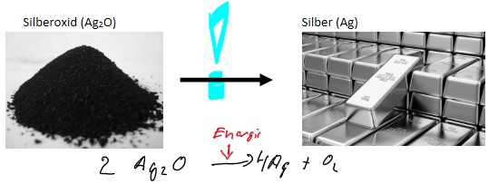
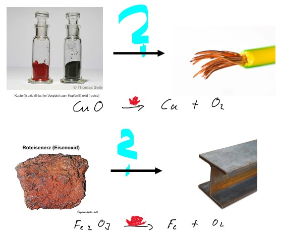
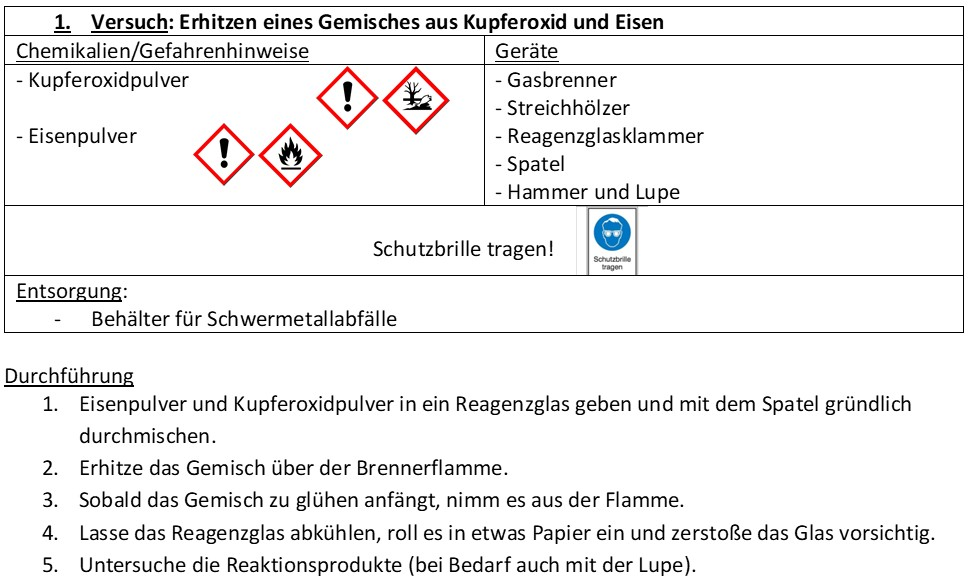
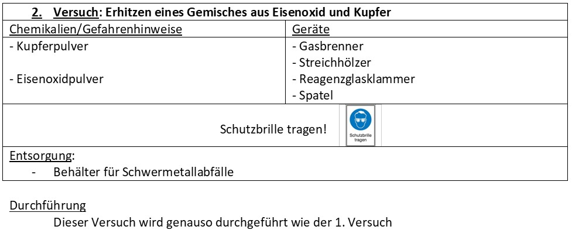
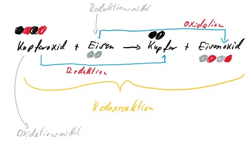
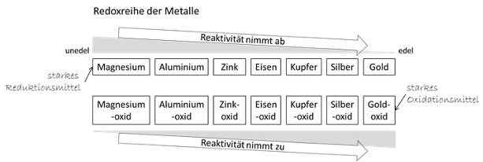

Beobachtung
Wir wissen aus einem früheren Versuch, dass sich manche Metalloxide durch Energiezufuhr zerlegen lassen.

✒️Notiere die Beobachtung in deinem Heft: Die Gewinnung von Silber aus Silberoxid ist durch Erhitzen (Thermolyse) möglich.
Funktioniert dieser Weg auch bei unedleren Metallen wie Kupfer oder Eisen?

✒️Ergänze deine Beobachtung: Die Gewinnung von Kupfer oder Eisen aus ihren Oxiden ist durch einfaches Erhitzen nicht (oder nur sehr schwer) möglich.
Fragestellung
✒️Übernimm die Fragestellung aus dem Material in dein Heft: Wie lässt sich Kupferoxid reduzieren?
Analyse des Problems: Eine Analogie
Um eine Lösung für unser Problem zu finden, müssen wir die Vorgänge auf der Teilchenebene besser verstehen. Eine Analogie hilft uns dabei.
✒️Öffne das Analyse-Modul, bearbeite die Geschichte und die dazugehörigen Fragen. Kehre danach hierher zurück, um deine Hypothese zu formulieren.
Analyse-Modul starten
Hypothese
✒️Formuliere nun auf Basis der Analogie und der geplanten Durchführung eine passende Hypothese.
Kontrollfrage: Welche Hypothese leitet sich direkt aus der Analogie ab?
Überprüfung: Die Experimente
Wir überprüfen die Hypothese, indem wir zwei Versuche durchführen.


✒️Beschreibe in 1-2 Sätzen, was bei der Durchführung von Versuch 1 und Versuch 2 gemacht wird und was damit erreicht werden soll.
Kontrollfrage: Warum führt man Versuch 2 als "Kontrollexperiment" durch?
Ergebnis
✒️Notiere die Ergebnisse beider Versuche in Stichpunkten.
Frage 1/4: Neuer Stoff 1
Welche neue Art von Körnchen kann man im Produkt von Versuch 1 erkennen?
Frage 2/4: Alter Stoff neu
Was passiert mit dem ursprünglich schwarzen Pulver in Versuch 1?
Frage 3/4: Energie
Was beobachtet man kurz nach dem Starten der Reaktion in Versuch 1?
Frage 4/4: Kontrollversuch
Was ist das Ergebnis von Versuch 2?
Deutung
✒️Erkläre die Ergebnisse in Stichpunkten und formuliere eine passende Reaktionsgleichung als Wortgleichung.
Frage 1/4: Deutung von Stoff 1
Die rot-metallisch glänzenden Körnchen sind...
Frage 2/4: Deutung von Stoff 2
Der dunkle Feststoff ist nun...
Frage 3/4: Deutung der Energie
Das selbstständige Aufglühen bedeutet, dass die Reaktion...
Frage 4/4: Deutung des Kontrollversuchs
Dass in Versuch 2 nichts passiert, beweist:
✒️Übernimm den Lückentext und fülle die Lücken.
ist also reaktiver als und geht daher eine festere Bindung zum Sauerstoff ein. Es ist deshalb in der Lage, dem den Sauerstoff zu entziehen.
Erkenntnis
✒️Führe die folgenden Aufgaben aus dem Material als Erkenntnis in deinem Heft aus:
- 1. Übernimm die beschriftete Reaktionsgleichung.

- 2. Beschreibe die Reaktion unter Verwendung der Fachbegriffe.
- 3. Formuliere Definitionen für Oxidationsmittel und Reduktionsmittel.
- 4. Übernimm die Redoxreihe der Metalle.
